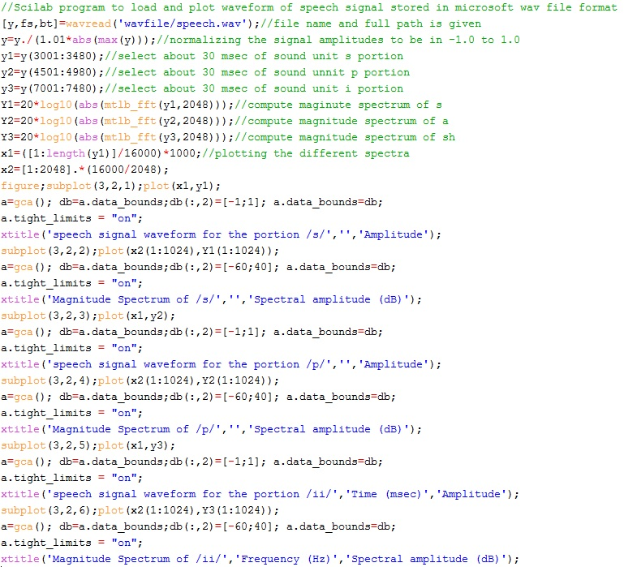
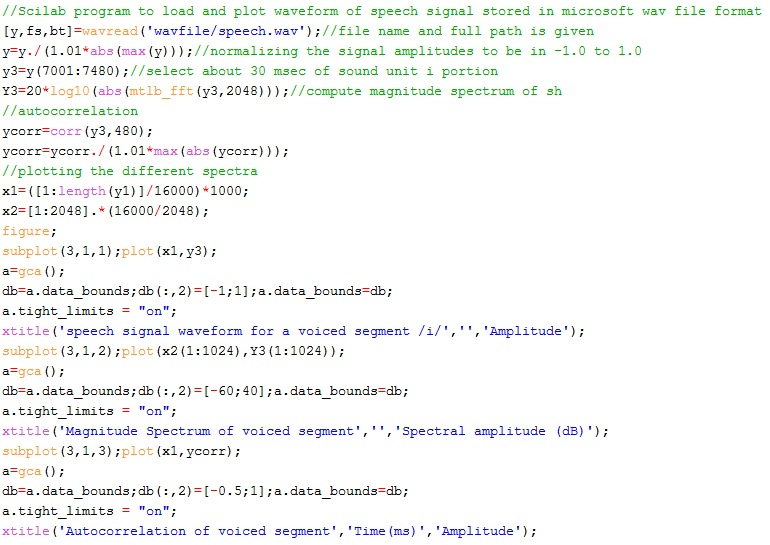
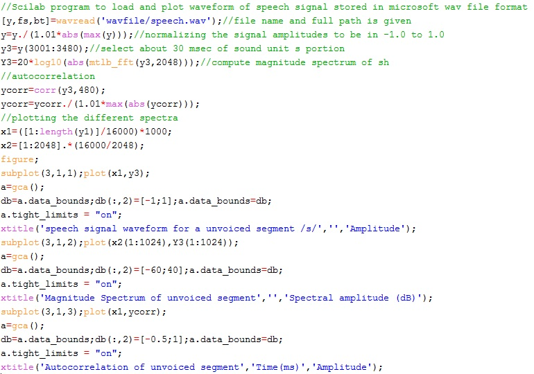
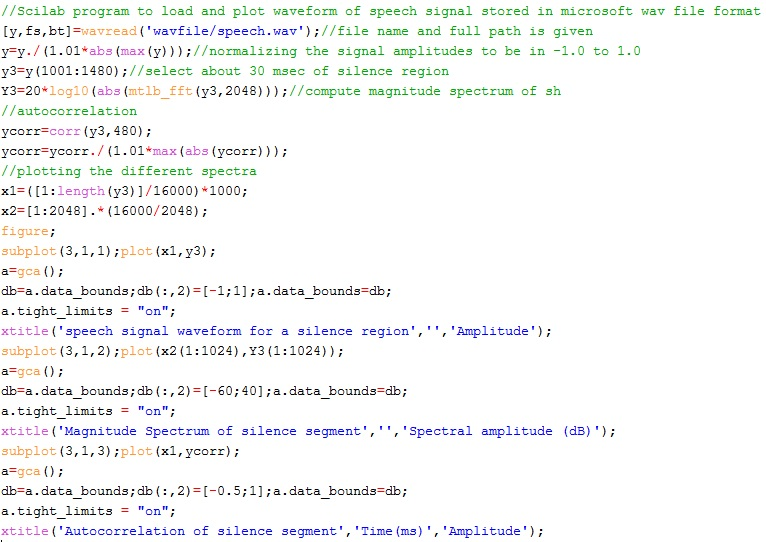

Shakshat Virtual Lab 
INDIAN INSTITUTE OF TECHNOLOGY GUWAHATI
Plotting Speech Signal and Its Spectra
In this experiment we observe the nature of speech signal only qualitatively without looking much into the signal processing methods to extract them. The aim is to get hold on to the basic understanding of identifying the voiced/unvoiced/silence regions of speech from their time domain and frequency domain representations. For this we need to plot the speech signal in time and frequency domains. The time domain representation is termed as waveform and frequency domain representation is termed as spectrum . As discussed in Experiment 1, due to the non-stationary nature of speech, we consider speech signals in short ranges for plotting their waveforms and spectra. The typical lengths include 10-30 msec. Waveforms and their spectra for segments selected from the word speech recorded using 16 kHz sampling frequency and 16 bit resolution are plotted in Figure 1. As it can be observed, the time domain and frequency domain characteristics are distinct for the three cases. Voiced segment represents periodicity in time domain and harmonic structure in frequency domain. Unvoiced segment is random noise-like in time domain and spectrum without harmonic structure in frequency domain. Silence region does not have energy in either time or frequency domain. The Scilab code to select voiced, unvoiced and silence segments of the word speech and plotting their spectra is as given below.

Analysis of Voiced Speech
We should be able to identify whether given segment of speech, typically, 20 - 50 msec, is voiced or not. The voiced speech segment is characterized by the periodic nature, relatively high energy, less number of zero crossings and more correlation among successive samples. The voiced speech can be identified by observation of the waveform in the time domain due to its periodicity nature. In the frequency domain, the presence of harmonic structure is the evidence that the segment is voiced. Further, the spectrum will have more energy, typically, in the low frequency region. The spectrum will also have a downward trend starting from zero frequency and moving upwards. The autocorrelation of a segment of voiced speech will have a strong peak at the pitch period. The high energy can be observed in terms of high amplitude values for voiced segment. However, energy alone cannot decide the voicing information. Periodicity is crucial along with energy to identify the voiced segment unambiguously. Similarly the relatively low zero-crossings can also be indirectly observed as smooth variations among sequence of sample values. Figure 2 below shows the code to generate the waveform, spectrum and autocorrelation sequence for a given segment of voiced speech. The figure generated gives plots related to a 30 msec segment of voiced speech. The characteristics about the voiced speech mentioned above are observable in these plots. This figure displays the typical nature and should be observed carefully to be able to comment whether a given segment of speech is voiced or not at a later time.

Analysis of Unvoiced Speech
We should be able to identify whether given segment of speech, typically, 20 - 50 msec, is unvoiced or not. The unvoiced speech segment is characterized by the non-periodic and noise-like nature, relatively low energy compared to voiced speech, more number of zero crossings and relatively less correlation among successive samples. The unvoiced speech can be identified by observation of the waveform in the time domain due to its non-periodicity and noise-like nature. In the frequency domain, the absence of harmonic structure is the evidence that the segment is unvoiced. Further, the spectrum will have more energy, typically, in the high frequency region. The spectrum will also have an upward trend starting from zero frequency and moving upwards. The autocorrelation of a segment of unvoiced speech will match typically that of random noise. The low energy can be observed in terms of low amplitude values for unvoiced segment. However, energy alone cannot decide the unvoicing information. The number of zero-crossings is crucial along with energy to identify the unvoiced segment unambiguously. The relatively high zero-crossings can also be indirectly observed as rapid variations among sequence of sample values. Figure 3 below shows the code to generate the waveform, spectrum and autocorrelation sequence for a given segment of unvoiced speech. The figure generated gives plots related to a 30 msec segment of unvoiced speech. The characteristics about the unvoiced speech mentioned above are observable in these plots. This figure displays the typical nature and should be observed carefully so that we should be able to comment whether a given segment of speech is unvoiced or not at a later time.

Analysis of Silence Region
It is identify the silence regions in speech. The silence region is characterized by the absence of any signal characteristics, lowest energy compared to unvoiced and voiced speech segments, relatively more number of zero crossings compared to unvoiced segment and no correlation among successive samples. The silence region can be identified by observation of the waveform in the time domain due to absence of any signal. In the frequency domain, the absence of any spectral information is the evidence that the segment is silence region. The autocorrelation of a segment of silence region will not have any information. The lowest energy can be observed in terms of absence of any appreciable amplitude values. Even though energy is a good information for identifying silence regions, the robustness can be improved further using the zero-crossings information. Figure 4 below shows the code to generate the waveform, spectrum and autocorrelation sequence for a given segment of unvoiced speech. The figure generated gives plots related to a 30 msec segment of silence region. The characteristics about the silence region mentioned above are observable in these plots. This figure displays the typical nature and should be observed carefully so that we should be able to comment whether a given segment of speech belongs to silence region or not at a later time.
